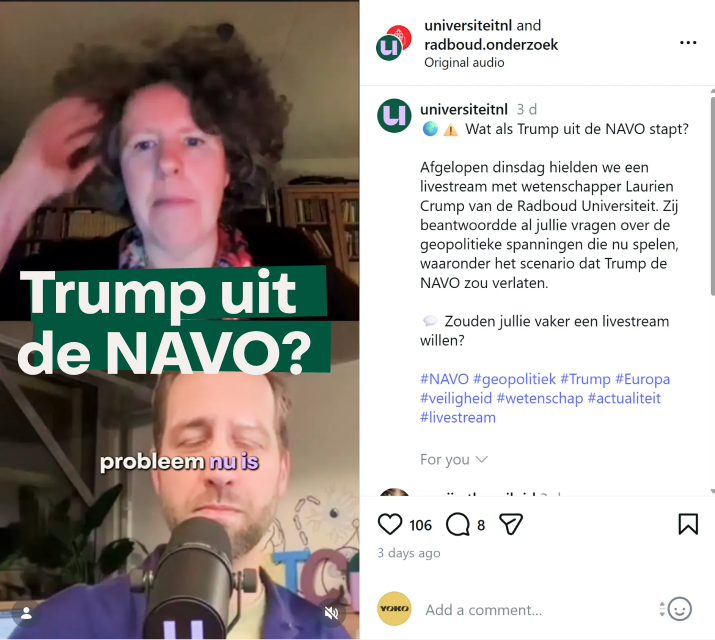
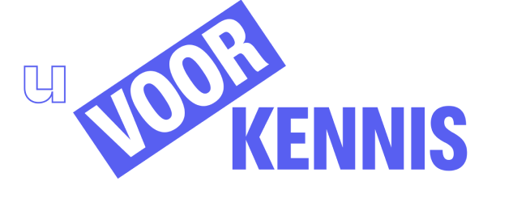
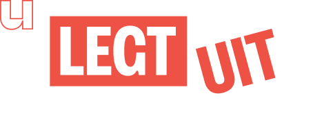

Partnergids / Voorbeelden
Voorbeelden
Het systeem in actie. Redactionele collage, geen gladde SaaS — speels genoeg om nieuwsgierig te maken, duidelijk genoeg om UvNL te herkennen.

Slim hoeft nooit saai te zijn.


Grote vragen in elk formaat.



Een familie met eigen karakters.
Korte, verzonnen samenstellingen die als bijnamen voelen. Elk format heeft een eigen tempo, maar blijft zichtbaar onderdeel van dezelfde wereld.

